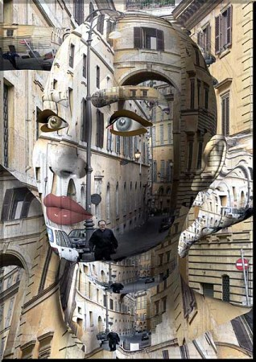
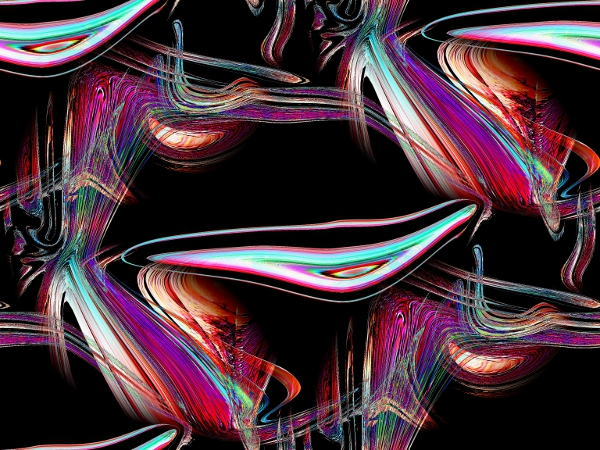
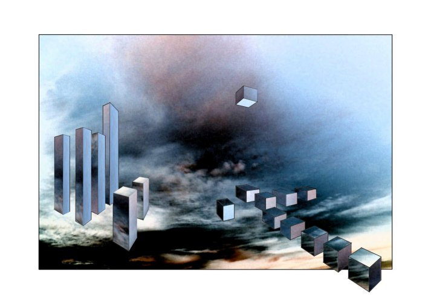
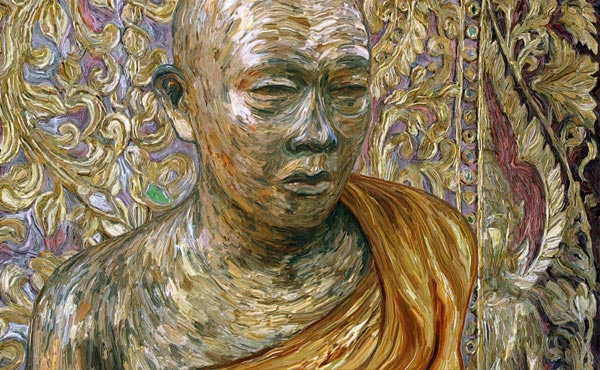
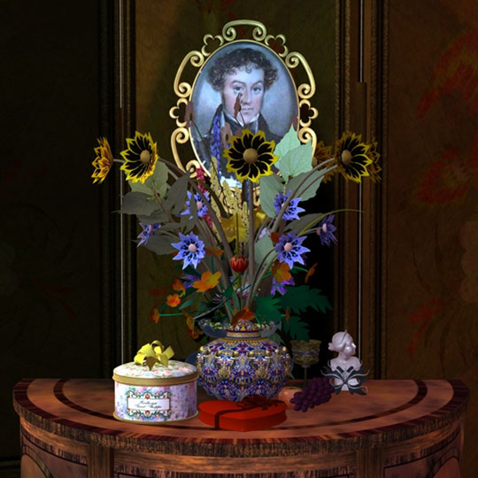
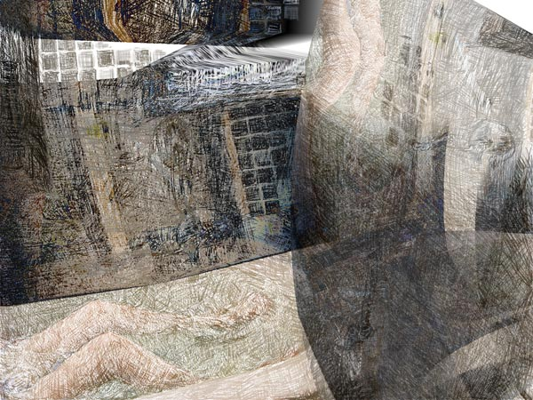

IMAGES OF THE DAY 102
04/11/2024 - 04/20/2024

04/11/2024
Mixed Technique
3D Renderings
People and Places
Rom01
by Gerhard Katterbauer
Click image to access artist's full exhibit

04/12/2024
Mixed Technique
Mixed Media
Moving Colors
by Erica Kiechle-Klempt
Click image to access artist's full exhibit

04/13/2024
Mixed Technique
Surrealism and New Media
Partial Ascension
by Alan King
Click image to access artist's full exhibit

4/14/2024
Mixed Technique
States of Mind
Gold Leaf Mask
by Eric W. Kuns
Click image to access artist's full exhibit

4/15/2024
Mixed Technique
3D: Radical Romantic
Still Life Cabinet
by Jawek Kwakman
Click image to access artist's full exhibit
4/16/2024
Mixed Technique
Red Wheel
by Glanfyll Lewis
Click image to access artist's full exhibit


4/17/2024
Mixed Technique
Veiled Interior
by Myriam Lozada-Jarvis
Click image to access artist's full exhibit
4/18/2024
Mixed Technique
Fractals and Photographs
Incoming Storm
by John Macpherson
Click image to access artist's full exhibit

4/19/2024
Mixed Technique
Astronomical Portraits and Exotic Machines
Pied Piper
by Ciro Marchetti
Click image to access artist's full exhibit

4/20/2024
Mixed Technique
An Art of High Spirits
Future Type Amphibians & Wandering Plants
by Masanta
Click image to access artist's full exhibit